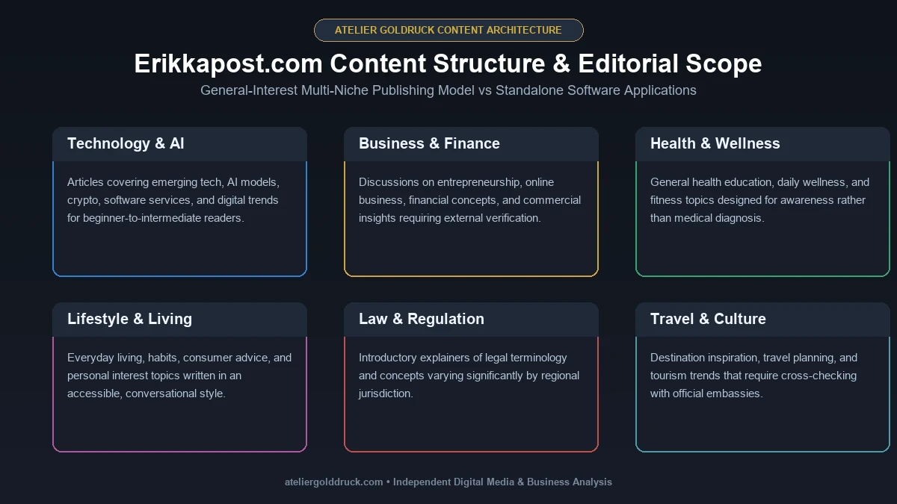
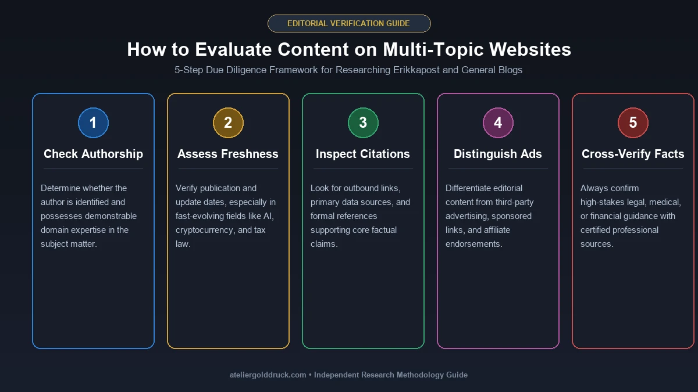

If you recently came across Erikkapost com, you may have wondered what exactly it is.
Is it a news website?
Is it a publishing platform?
Is it a social media tool?
Is it a technology service?
The answer becomes less obvious because different websites describe Erikkapost in different ways.
After looking at the available website structure and current content, the simplest explanation is this:
Erikkapost is associated with a general-interest, multi-topic online content website rather than a conventional software application.
Its publicly visible content spans areas such as technology, business, health, lifestyle, law, travel, home improvement, education, entertainment, and other general-interest subjects. The currently accessible Erikkapost web presence uses a conventional article-and-category structure, making it much closer to an online magazine or informational blog than a dedicated SaaS product.
That distinction matters because some third-party descriptions make Erikkapost sound like a sophisticated publishing or social-media automation platform. The visible website does not provide strong evidence for that interpretation. One independent review likewise found that the site behaves like a standard multi-niche blog rather than a social-media automation tool or enterprise CMS.
This guide explains what Erikkapost com is, what readers can expect from it, the subjects it covers, how the site works, and how to evaluate its content before relying on it.
What Is Erikkapost com?
Erikkapost com refers to the Erikkapost website and the online content associated with the name.
Based on its visible structure, Erikkapost is best understood as a general-interest content and informational website.
Rather than focusing exclusively on one industry, it uses multiple categories to publish articles on different subjects.
The current Erikkapost site navigation includes categories such as:
- Business
- Health
- Home Improvement
- Lifestyle
- Law
- Technology
- Travel
The homepage also displays recently published articles covering subjects such as artificial intelligence, cryptocurrency, technology, and other digital topics.
This broad editorial model explains why someone might discover Erikkapost through a search query about technology one day and a completely unrelated topic another day.
Erikkapost at a Glance
| Detail | What the available website shows |
|---|---|
| Website name | Erikkapost |
| Primary purpose | General informational content |
| Site format | Multi-topic article website |
| Main activity | Reading and browsing articles |
| Content style | General-interest guides and informational posts |
| Major categories | Business, Health, Lifestyle, Law, Tech, Travel and more |
| Access model | Publicly accessible articles |
| Software-product evidence | No clear evidence of a standalone SaaS product |
| Audience | General online readers |
The important takeaway is that Erikkapost should not automatically be interpreted as a software brand simply because the name contains “post.”
Why Are People Searching for Erikkapost com?
There are several possible reasons someone might search for the keyword.
They saw the domain somewhere
You may have encountered erikkapost.com in:
- A search result
- A social media post
- A referral link
- An article
- A browser history entry
- A website recommendation
- A discussion about online tools
If the name is unfamiliar, searching for it directly is a natural way to determine what it is.
Conflicting descriptions create curiosity
Another reason is the inconsistent information surrounding the domain.
Some third-party articles have described Erikkapost as a content-management or social-media-related platform. Others describe it as a general blog.
That difference is significant.
A site should be evaluated by what it actually presents to visitors, not simply by what another article claims it does.
The available evidence currently points much more strongly toward a content website than a standalone publishing application.
What Does Erikkapost Publish?

Erikkapost follows a broad content model.
Instead of building its entire website around one specialist subject, it publishes material across several categories.
The current visible navigation includes Business, Health, Home Improvement, Lifestyle, Law, Tech, and Travel.
That gives the site a general-interest character.
Technology Content
Technology is one of the prominent categories associated with Erikkapost.
Technology articles can cover subjects such as:
- Artificial intelligence
- Digital services
- Software
- Online platforms
- Internet trends
- Cryptocurrency
- Emerging technology
- Digital tools
The current homepage, for example, displays articles concerning artificial intelligence and cryptocurrency.
For someone looking for a simple introduction to a technology subject, this type of article can be useful.
However, readers researching advanced technical topics should distinguish between a general-interest explanation and authoritative technical documentation.
Business and Finance-Related Topics
Business and finance-related subjects are another part of the broader content ecosystem.
Articles in this area may appeal to readers interested in:
- Business ideas
- Entrepreneurship
- Financial concepts
- Market-related topics
- Digital business
- Online services
- Career subjects
The same rule applies here as with any general publication:
An introductory article is not necessarily a substitute for professional or primary-source information.
If a financial decision involves significant money, regulations, investments, taxes, or legal obligations, readers should verify important information through authoritative sources.
Health and Wellness Content
Health is also represented in the Erikkapost category structure.
Health content can be useful for general education, but it deserves a higher standard of verification than ordinary lifestyle content.
A reader should be particularly careful when an article discusses:
- Medical conditions
- Medication
- Treatment
- Supplements
- Diagnosis
- Pregnancy
- Emergency symptoms
- Mental health
- Medical procedures
For these subjects, a general blog should be treated as a starting point rather than the final authority.
Healthcare professionals and reputable medical institutions remain the appropriate sources for personal medical decisions.
Lifestyle and Everyday Topics
Lifestyle content naturally fits the multi-topic model.
This category can cover subjects related to:
- Daily living
- Personal interests
- Entertainment
- Habits
- Home life
- General advice
- Consumer topics
The advantage of this type of content is accessibility.
Readers do not necessarily need specialist knowledge to understand the subject.
Home Improvement
Home improvement is another category visible on the Erikkapost website.
This type of content can cover practical subjects involving:
- Home maintenance
- Repairs
- Renovation
- Interior improvements
- Household decisions
- Property-related ideas
For simple inspiration, general articles can be useful.
For electrical, structural, plumbing, gas, or other safety-critical work, however, readers should use qualified professionals and official guidance where appropriate.
Law-Related Content
Erikkapost also includes a Law category.
Legal information is another area where readers should be careful about treating general online articles as professional advice.
Laws can differ by:
- Country
- State
- Province
- City
- Court jurisdiction
- Date
- Individual circumstances
An article can help explain a legal concept, but important legal decisions should be checked against current legislation, government resources, or a qualified legal professional.
Travel Content
Travel is another broad category associated with Erikkapost.
Travel articles can be useful for:
- Destination ideas
- Travel inspiration
- General planning
- Things to know before visiting a location
- Travel-related trends
But travel information can become outdated.
Visa requirements, entry rules, airline policies, hotel regulations, passport requirements, and government procedures can change.
If an article gives specific immigration or government information, verify it through the relevant official authority before making travel arrangements.
Is Erikkapost a Software Tool?
This is one of the most important questions surrounding the keyword.
There is not strong visible evidence that Erikkapost is a conventional software application.
A software product normally gives users access to some combination of:
- Dashboard
- Account management
- Software controls
- Data management
- Integrations
- Publishing tools
- APIs
- Automation
- Subscription plans
- User workspaces
The visible Erikkapost experience is instead centered around articles and categories.
That makes the site much more consistent with an online publication or informational blog.
An independent review of the domain reached a similar conclusion, noting that the site presents basic blog articles rather than the social-media automation or CMS functionality sometimes attributed to it elsewhere.
Is Erikkapost a Social Media Automation Platform?
There is no clear evidence from the visible website that Erikkapost functions as a social media automation platform.
A genuine social-media management system would normally allow users to connect social accounts and perform tasks such as:
- Schedule posts
- Manage publishing calendars
- Track engagement
- Monitor social accounts
- Manage campaigns
- Analyze performance
- Coordinate multiple profiles
That is very different from a website whose primary experience is reading articles.
Therefore, claims that Erikkapost itself is a social-media automation tool should be treated cautiously unless they can be supported by first-party evidence.
Is Erikkapost a CMS?
There is another distinction worth making.
The website may use a content-management system such as WordPress, but that does not mean Erikkapost sells a CMS.
WordPress is software used to build and manage websites.
Thousands of:
- Blogs
- News websites
- Business sites
- Magazines
- Portfolios
- Online communities
use WordPress.
So there is a difference between:
“Erikkapost is a website built using a CMS”
and:
“Erikkapost is a commercial CMS product.”
The first can be true without the second being true.
How Does Erikkapost Work?
For an ordinary visitor, the process is simple.
1. Find an article
A visitor can arrive through search engines, social media, referrals, or direct navigation.
2. Read the article
The visitor can read the information without needing a complicated software interface.
3. Explore related categories
The site's category structure lets readers move between different subjects.
4. Continue browsing
Related articles may lead readers to additional topics.
5. Leave the website
Once the reader has found the required information, they can simply leave the site.
This is the normal behavior expected from an informational publication.
Erikkapost Website Features
Because Erikkapost is better understood as a content website than as SaaS software, its “features” are mainly publishing and browsing features.
Category-Based Navigation
The site separates content into broad categories such as technology, business, health, lifestyle, law, and travel.
This helps visitors find articles according to their interests.
Search Function
A site search can make it easier to locate specific subjects without manually browsing every category.
Article-Based Content
The primary unit of the website is the article.
Visitors generally arrive because they are interested in a particular topic rather than because they want to operate a software dashboard.
Mobile-Friendly Reading
Like most modern content websites, accessibility across different screen sizes is important for readers using smartphones, tablets, laptops, and desktops.
Public Content
The visible site is designed around publicly accessible informational material rather than a membership-only software environment.
Erikkapost and WordPress
Several third-party analyses describe Erikkapost as a WordPress-based website using a conventional news/blog structure.
That is worth mentioning because it helps explain the site's appearance.
WordPress is one of the most widely used content-management systems on the web.
A WordPress-powered website can be:
- A personal blog
- A newspaper
- A business website
- An online magazine
- A portfolio
- An educational publication
- A community website
Therefore, the use of WordPress is not itself a positive or negative trust signal.
It simply tells us something about the site's underlying publishing technology.
Who Is Erikkapost For?
The broad editorial approach means Erikkapost may appeal to several types of readers.
General Readers
People who enjoy browsing different topics can benefit from a multi-category site.
Beginners
Readers looking for an introductory explanation may prefer straightforward articles rather than highly technical documentation.
Technology Readers
Visitors interested in general technology and digital trends may encounter relevant content.
Lifestyle Readers
The broader lifestyle categories can provide casual reading and everyday information.
Travel Readers
Travel-related content may be useful for initial destination research and inspiration.
Students
Students may use general online articles to understand unfamiliar topics before moving to more authoritative educational resources.
Is Erikkapost Legit?
This question needs a more careful answer than simply saying “yes” or “no.”
There are at least three separate questions:
1. Does a real website exist?
2. Is the website technically safe to browse?
3. Can every article published there be trusted as authoritative?
These are not the same thing.
The available Erikkapost web presence is clearly functioning as a content website, with published articles, categories, contact information, policies, and other standard website elements.
That supports treating it as a functioning online publication.
But the existence of a functioning website does not automatically establish that every article is accurate, expertly reviewed, or suitable as a primary source.
That distinction is important.
Is Erikkapost Safe?
For ordinary browsing, the site should be approached like any unfamiliar content website.
Basic precautions are sensible:
- Keep your browser updated.
- Do not download unknown files.
- Avoid suspicious pop-ups.
- Do not enter passwords into unexpected pages.
- Do not provide financial information without a clear reason.
- Check where external links lead.
- Be careful with advertisements and redirects.
One third-party audit describes Erikkapost as a conventional ad-supported content site and recommends particular caution around advertisements, downloads, and external redirects.
That does not mean every advertisement is dangerous.
It simply means the safest approach is to distinguish the site's editorial content from third-party advertising or external destinations.
Can You Trust Information Published on Erikkapost?

The answer depends on what information you are reading.
A general article about a lifestyle subject has different consequences from an article about medical treatment or financial regulation.
A sensible evaluation process is:
Check the author
Is the writer clearly identified?
Check the date
Could the information have changed since publication?
Check the sources
Does the article reference primary or authoritative sources?
Compare important claims
Can you confirm the information elsewhere?
Consider the subject
The more consequential the topic, the more verification matters.
For example:
| Topic | Recommended approach |
|---|---|
| Lifestyle ideas | General article may be sufficient for inspiration |
| Entertainment | Cross-check important facts |
| Technology | Compare with official documentation |
| Travel | Verify current travel rules |
| Health | Consult qualified medical sources |
| Finance | Verify with authoritative financial sources |
| Law | Check current legal/official sources |
| Government procedures | Use the relevant government website |
This is not unique to Erikkapost.
It is simply good online research practice.
Why You Should Be Careful With Conflicting Erikkapost Reviews
One of the biggest problems surrounding the keyword is information repetition.
Suppose one website incorrectly describes a domain as a social-media automation tool.
A second website copies that description.
A third website uses the second website as its source.
Soon, three websites appear to agree.
But three copies of the same claim do not necessarily equal three independent confirmations.
This is why first-party evidence matters.
In the case of Erikkapost, the visible site structure is centered on articles and categories rather than a user-facing automation dashboard.
That makes the content-publication interpretation considerably more defensible than unsupported claims about enterprise publishing software.
What Makes Erikkapost Different From a Specialist Website?
A specialist website usually focuses heavily on one subject.
For example:
- A technology publication focuses on technology.
- A medical publication focuses on health.
- A finance publication focuses on financial subjects.
- A travel publication focuses on travel.
Erikkapost takes a broader route.
Its category structure spans several unrelated areas.
That has an obvious advantage:
Variety.
But it also creates a limitation:
Depth and expertise can vary significantly from one topic to another.
A reader should therefore judge individual articles on their own merits instead of assuming that every subject receives the same level of specialist treatment.
Advantages of Erikkapost
Broad Topic Coverage
The biggest advantage is variety.
A reader can move between technology, business, lifestyle, health, travel, law, and other areas without visiting a completely different site for every subject.
Easy Content Discovery
A category-based blog makes casual browsing relatively straightforward.
Beginner-Friendly Format
General-interest articles are often easier for beginners to understand than highly technical publications.
Free Information Access
Visitors can access ordinary website content without needing the type of subscription normally associated with premium publications.
Useful Starting Point
For many subjects, an introductory article can help a reader understand the basic terminology before conducting deeper research.
Potential Limitations
A balanced review should also acknowledge the weaknesses.
Broad Subject Coverage
Covering many unrelated subjects can make it difficult for a publication to establish deep expertise in every field.
Author Transparency
Third-party reviews have raised questions about the amount of author information and editorial transparency available on the site.
Source Verification
Not every general-interest article necessarily provides the same level of sourcing as an academic, government, or specialist publication.
Information Freshness
Some subjects change rapidly.
Technology, financial regulations, travel requirements, laws, and government procedures can become outdated.
Not a Replacement for Primary Sources
For high-stakes decisions, readers should use Erikkapost as a possible starting point rather than their only source.
How to Use Erikkapost More Effectively
If you discover an Erikkapost article through Google, you do not necessarily need to dismiss it.
Instead, use it intelligently.
Start with the article
Read it to understand the basic subject.
Identify important claims
Look for statistics, dates, regulations, instructions, or recommendations that could materially affect your decision.
Verify those claims
Use official websites, primary sources, professional publications, or specialist resources.
Check the publication date
A three-year-old article about a rapidly changing technology topic may no longer be reliable.
Look at the author's credentials
If the subject requires specialist expertise, author information becomes more important.
This approach lets you benefit from accessible content without confusing convenience with authority.
Erikkapost for Technology Research
Technology is a particularly interesting case.
A general-interest technology article can help explain:
- What a new technology means
- Why a trend matters
- How an online service works
- What a digital term means
- What consumers should know
But advanced users may need additional sources.
For example, if you are researching software, it is better to check:
- Official documentation
- Developer documentation
- Product changelogs
- Vendor support pages
- Security advisories
- Independent technical testing
Erikkapost can introduce the subject, but the primary source should usually settle the technical question.
Erikkapost and Search Engine Visibility
Because Erikkapost covers many subjects, individual pages may appear for informational searches across different categories.
That does not necessarily mean the site is an authority in every subject it covers.
Search engines evaluate individual pages and websites using many signals, including relevance, quality, usefulness, authority, and other contextual factors.
For readers, the lesson is simple:
Finding an article in Google is not the same thing as proving that the article is the best source available.
Use search rankings as a discovery mechanism, then evaluate the actual information.
Frequently Asked Questions About Erikkapost com
What is Erikkapost com?
Erikkapost com refers to the Erikkapost online content website. Its visible structure is that of a general-interest, multi-topic informational publication covering areas such as business, health, lifestyle, law, technology, travel, and other subjects.
Is Erikkapost a software application?
There is no strong visible evidence that Erikkapost is a standalone SaaS application. The website primarily presents articles and categories rather than a conventional software dashboard.
Is Erikkapost a social media management tool?
Erikkapost should not automatically be treated as a social media management platform. Claims that it provides sophisticated social-media automation should be independently verified because the visible website is primarily content-oriented.
What topics does Erikkapost cover?
The current site navigation includes Business, Health, Home Improvement, Lifestyle, Law, Tech, and Travel. Its homepage also shows content related to artificial intelligence and cryptocurrency.
Is Erikkapost free?
The publicly accessible content is available for readers to browse without the type of subscription barrier associated with premium publications.
Is Erikkapost legit?
Erikkapost appears to be a functioning online content website. However, website legitimacy and content accuracy are different questions. Individual articles should be evaluated based on their author, sources, date, and subject matter.
Is Erikkapost safe?
For ordinary browsing, use the same precautions you would use on any unfamiliar content website. Be cautious with unexpected downloads, pop-ups, external redirects, and requests for sensitive information.
Can I trust Erikkapost for health or financial advice?
You should not rely on a general-interest website as the sole authority for high-stakes health or financial decisions. Verify important claims with qualified professionals and authoritative sources.
Is Erikkapost a news website?
It has characteristics of a general online publication, but it is more accurate to describe it as a multi-topic informational/content website rather than assume it operates like a traditional newsroom.
Why does Erikkapost cover so many different subjects?
Its broad category structure suggests a general-interest publishing model. This allows the site to attract readers with different interests rather than concentrating exclusively on one niche.
Why are there different descriptions of Erikkapost online?
Some third-party articles appear to interpret or repeat claims about the domain without relying on the same first-party evidence. The visible website itself is primarily organized around content categories and articles, which is why it is safer to describe it according to what can actually be observed.
Final Verdict: What Is Erikkapost com?
Erikkapost com is best understood as a broad online content and informational website rather than a specialized software product.
Its current web presence covers a wide range of subjects, including technology, business, health, lifestyle, law, travel, home improvement, and other general-interest topics.
The site's broad approach makes it potentially useful for readers who want quick explanations or casual information across different subjects.
At the same time, breadth comes with an important trade-off.
A website that covers technology, health, finance, travel, law, and lifestyle cannot automatically be treated as a specialist authority in all of those areas.
That is why the best way to use Erikkapost is as a starting point for information discovery, while verifying important claims through primary, official, or specialist sources.
Most importantly, readers should not confuse the site's name with a software product. The visible website experience is centered on articles, categories, and information—not a conventional social-media automation dashboard or enterprise content-management application.
So, if you searched “Erikkapost com” because you wanted to know what the site actually is, the short answer is:
Erikkapost is a multi-topic online content website designed primarily for reading and discovering informational articles across a variety of subjects.
That is a much more useful description than the exaggerated software claims that sometimes appear in third-party search results.
For more such useful information read our site ateliergolddruck.com